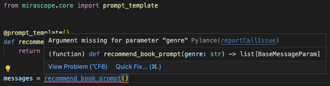
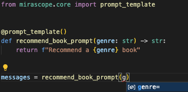

A Guide to LLM Orchestration¶
LLM orchestration manages and coordinates interactions and workflows for improving the performance and effectiveness of LLM-driven applications.
Central to this is the large language model and its responses, which are non-deterministic and typically unstructured. This makes it challenging for other components of the application to use those responses.
But these challenges can be overcome by decision-making around careful application design on the one hand, and effective orchestration on the other.
Among other things, orchestration in particular:
- Ensures the quality of prompts being sent to the LLM.
- Evaluates the models outputs for criteria like helpfulness, relevance, bias, etc.
- Structures the models outputs so theyre reusable by other components.
- Helps provide a consistent user experience through reliable error handling and load balancing.
These tasks and flows are sufficiently complex that frameworkswhich consist of specialized tools and librarieshave been developed to coordinate and execute them. A framework ensures that the application correctly leverages LLMs to deliver high-quality, reliable, and contextually appropriate responses to end users.
Three of the most popular frameworks today are open source and handle a variety of use cases:
- LangChain was among the first frameworks to become publicly available, and offers robust agentic capabilities and a standard interface for chaining LLM calls.
- LlamaIndex is known for its data ingestion and information retrieval use cases, and is often used for applications like retrieval augmented generation (RAG).
- Haystack focuses on building pipelines for NLP tasks like question answering, document search, and summarization.
When implemented correctly, frameworks have the adaptability to handle the intricacies around operations and workflows to ensure a good user experience. And at best they should be intuitive to set up and allow developers to iterate quickly.
We find, however, that modern frameworks are quite complex (and are often an ecosystem in themselves), at least partly because:
- Some of their abstractions seem to reinvent the wheel for things youd normally use vanilla Python for.
- Their inner workings can be opaque and hard to figure out, especially for debugging purposes.
- They have a tendency to produce new modules that are less efficient than existing, purpose-built tools.
- Their dependency on numerous wrappers and abstractions, often leading to an excess of import statements, makes maintenance challenging.
In response to these challenges, we developed Mirascope, a lightweight and modular Python toolkit designed for the rapid development of LLM applications.
Our modules slot into your existing workflows where youd prefer the simplicity and flexibility of plain Python over using a frameworks abstractions.
Below, we describe key aspects of orchestration and bring examples of how these are implemented by frameworks.
6 Key Aspects of LLM Orchestration (with Examples)¶
Orchestration typically involves six key aspects in the context of application development:
1. Task Management¶
Tasks are organized and managed as part of workflow execution within LLM applications. This involves automation around creation, scheduling, and completion of complex tasks.
Prompt Engineering¶
An example of such a task is the development of prompts, which serve as the primary interface for interacting with the model.
To get the best responses, prompts should contain clear instructions as shown in the example code below, which generates a prompt for recommending movies based on recently watched titles:
from mirascope.core import openai, prompt_template
@openai.call("gpt-4o-mini")
@prompt_template(
"""
I've recently watched the following movies: {titles_in_quotes}.
What should I watch next?
"""
)
def recommend_movie_prompt(movie_titles: list[str]) -> openai.OpenAIDynamicConfig:
titles_in_quptes = ", ".join([f'"{title}"' for title in movie_titles])
return {"computed_fields": {"titles_in_quotes": titles_in_quotes}}
response = recommend_movie_propmt(["The Dark Knight", "Forrest Gump"])
This uses Mirascope's prompt_template decorator in tandem with the openai.call decorator, which centralizes internal prompt logic and turns the prompt into an actual LLM API call, respectively.
The above code also illustrates our principle of colocation, where everything impacting the quality of a call is colocated and versioned together. This can be seen in the computed field titles_in_quotes computed within the prompt function.
This approach to colocation emerged from our frustrations around working with both LangChain and the OpenAI SDK, where LLM calls and their parameters are separately managed. Making changes to one part of the code, like updating the model specification, often required efforts to track those changes in other parts.
Tools (Function Calling)¶
Frameworks also support tools (or function calling) to autonomously execute tasks like checking stock prices and classifying spam. This makes them agents working on your behalf, with the ability to choose which functions or external services to use.
For example, prompting an LLM with flight information will return a call to a function that checks the status of flights.
You enable this capability by passing it a function call signature, which will usually be a raw JSON file in a format like this:
"tools": [
{
"type": "function",
"function": {
"name": "get_flight_information",
"description": "Get the current flight status",
"parameters": {
"type": "object",
"properties": {
"flight_number": {
"type": "string",
"description": "The flight number, e.g., AA123"
},
"date": {
"type": "string",
"description": "The date of the flight in YYYY-MM-DD format"
}
},
"required": ["flight_number", "date"]
}
}
}
]
Writing your own JSON schema code can get messy quickly.
With Mirascope, we've added a convenient feature that allows you to use a function's docstring to automatically generate the function signature for you:
from mirascope.core import openai
def get_flight_information(flight_number: str, date: str) -> str:
"""Get the current flight status for `flight_number` on `date` and print it.
Args:
flight_number: The flight number, e.g., AA123.
date: The date of the flight in YYYY-MM-DD format.
"""
if flight_number == "AA123" and date == "2024-08-05":
return f"The flight {flight_number} on {date} is on time."
elif flight_number == "DL456" and date == "2024-08-05":
return f"The flight {flight_number} on {date} is delayed."
else:
return f"I'm sorry, I don't have the information for flight {flight_number} on {date}."
@openai.call("gpt-4o", tools=[get_flight_information])
def flight_info(flight_number: str, date: str) -> str:
return f"What's the flight status of {flight_number} on {date}?"
response = flight_info("AA123", "2024-08-05")
if tool := response.tool:
print(tool.call())
# > The flight AA123 on 2024-08-05 is on time.
In the above code, we set up the function get_flight_information to generate a function call with its docstring, and then we register this function as a tool with OpenAI (Mirascope also provides ways of turning functions into tools without needing a docstring).
2. Data Preparation¶
Data preparation involves cleaning, structuring, and formatting data from various data sources so it can be used by either the model or by other components (like vector databases) in the application.
An example of this is data extraction, where LLM outputs (usually raw text) are parsed to extract key information and save it in a format like CSV or JSON. This prepares the data for usage by other components and external applications.
The Mirascope code below provides an example of data extraction where key film details are extracted from the models responses:
from pydantic import BaseModel
from mirascope.core import openai
class MovieDetails(BaseModel):
title: str
director: str
@openai.call(model="gpt-4o", response_model=MovieDetails)
def extract_movie_details(movie: str) -> str:
return f"Extract details from this movie: {movie}"
movie = "Inception directed by Christopher Nolan."
movie_details = extract_movie_details(movie)
assert isinstance(movie_details, MovieDetails)
print(movie_details)
# > title='Inception' director='Christopher Nolan'
The function extract_movie_details takes a string input (movie), which is passed to the LLM. The model then generates an output thats validated by Pydantic against the MovieDetails schema.
Extracting details in this way allows you to parse large documents, articles, or research papers, and to store the details in databases or in so-called extract, transform, load (ETL) pipelines for ingestion into data warehouses.
3. Workflow Integration¶
Workflow integration embeds tools, technologies, or processes into existing operational systems and workflows to improve efficiency, consistency, and productivity.
This includes maintaining version control of prompts and AI models and ensuring smooth transitions between different model providers.
Changing Model Providers¶
Mirascope allows you to change model providers in just three lines (corresponding to the highlighted code below):
- Change the
from mirascope.core import {provider}import to the new provider. - Update any specific call params such as
model. - Update your class to use the new provider.
from mirascope.core import anthropic
@anthropic.call(model="claude-3-5-sonnet-20240620")
def recommend_recipe(ingredient: str) -> str:
return f"Recommend a recipe that includes {ingedient}"
response = recommend_recipe(ingredient="chicken")
print(response.content)
# > Chicken Alfredo with Creamy Garlic Sauce
Mirascope also makes it convenient to switch between providers that are very different, like OpenAI and Anthropic. Our simplest use case requires only one line to make the switch:
from mirascope.core import anthropic, openai, prompt_template
@prompt_template()
def recommend_book_prompt(genre: str) -> str:
return f"Recommend a {genre} book"
# OpenAI
openai_model = "gpt-4o-mini"
openai_recommend_book = openai.call(openai_model)(recommend_book_prompt)
openai_response = openai_recommend_book("fantasy")
print(openai_response.content)
# Anthropic
anthropic_model = "claude-3-5-sonnet-20240620"
anthropic_recommend_book = anthropic.call(anthropic_model)(recommend_book_prompt)
anthropic_response = anthropic_recommend_book("fantasy")
print(anthropic_response.content)
This is because the Mirascope allows us to use the run or run_async method to run the decorator for a specific provider against that prompt.
Prompt Management¶
A prompt management system maintains consistency in prompting while helping you iterate and experiment more productively. It also integrates with CI/CD pipelines while promoting collaboration and automates change tracking.
An example of prompt management is Lilypad, which versions and traces all prompts automatically so you don't have to worry about it and can instead focus on iterating and improving your prompts.
|
|-- .lilypad/
|-- |-- config.json
|-- lily/
| |-- __init__.py
| |-- {llm_function_name}.py
|-- pad.db
Lilypad includes:
- A
createcommand for quickly creating a new LLM function shim - A
runcommand for quickly running prompts during development - The
lily/directory where LLM functions live - The
pad.dbSQLite database for local development to store versions and traces
The magic is that Lilypad automatically versions the entire lexical closure. This means that changes to helper methods and utility functions will be considered version changes, enabling you to more easily catch changes that impact your prompt quality even when unexpected.
4. Scalability¶
To support scalability, frameworks leverage technologies that enable high throughput and minimal latency, such as streaming and asynchronous function calls. Additionally, being able to switch between different model providers (as weve covered in the last section) lets you choose providers offering better performance and handling of large-scale data.
Streaming Model Responses¶
A common strategy is to stream large responses as chunks, rather than waiting for the entire response to be generated. Mirascope streams, which you can enable by setting stream=True in the call decorator, provide BaseCallResponseChunk convenience wrappers around the original response chunks, as well as tools (if provided) that are constructed on your behalf:
from mirascope.core import openai, prompt_template
@openai.call(model="gpt-4o", stream=True)
@prompt_template("Recommend some {genre} books.")
def recommend_book(genre: str): ...
stream = recommend_book(genre="science fiction")
for chunk, tool in stream:
if tool: # will be `None` since no tools were set
print(tool.call())
else:
print(chunk.content, end="", flush=True)
The response is processed chunk by chunk in a for loop, printing each chunk's content as its received. The response can be displayed incrementally as its generated, rather than waiting for the entire response to be completed.
Streaming reduces the wait time associated with generating and delivering large responses and is ideal for real-time applications or when multiple users are interacting with the system simultaneously.
Async Streaming¶
Asynchronous streaming supports concurrency, as offered by our stream_book_recommendation function that sets up an asynchronous stream to get responses from the natural language processing model:
import asyncio
from mirascope.core import openai
@openai.call(model="gpt-4o", stream=True)
async def recommend_book(genre: str) -> str:
return f"Recomment a {genre} book"
async def stream_book_recommendation(genre: str):
stream = await recommend_book(genre=genre)
async for chunk, _ in stream:
print(chunk.content, end="", flush=True)
asyncio.run(stream_book_recommendation(genre="science fiction"))
This lets the application handle other tasks while waiting for data chunks to arrive, improving its overall responsiveness.
Async streaming is particularly useful for applications like real-time chat, or in situations where efficient resource usage and handling of multiple concurrent operations are necessary, such as for web servers, data processing pipelines, and interactive user interfaces.
5. Error Handling¶
Since LLMs have an element of unpredictability and sometimes produce undesired results, it's necessary to detect and manage errors effectively.
This is done using validation methods and custom error-handling rules, which can detect potential issues before they become problems and ensure applications run better.
As weve already covered above in Data Preparation, Pydantic is a popular library for catching errors. We can handle these errors gracefully using both Python and Pydantic as shown below:
from mirascope.core import openai
from pydantic import BaseModel, ValidationError
class Movie(BaseModel):
title: str
rating: float
@openai.call(model="gpt-4o-mini", response_model=Movie)
def recommend_movie() -> str:
return f"Recommend a movie"
try:
movie = recommend_movie()
assert isinstance(movie, Movie)
print(movie)
# > title='Inception' rating=8.8
except ValidationError as e:
print(e)
# > 1 validation error for Movie
# rating
# Input should be a valid number, unable to parse string as a number [type=float_parsing, input_value='excellent', input_type=str]
# For further information visit https://errors.pydantic.dev/2.6/v/float_parsing
The Movie class above defines a schema with title as a string and rating as a float, while recommend_movie() extracts data according to the Movie schema, using a prompt to recommend a movie.
The try-except block with ValidationError provides error handling.
On the input side of the LLM, however, a data framework will usually expect you to write your own custom validation logic. This is where Mirascope is different, as Mirascope calls will check for type safety for your prompts.
We also provide documentation and linting for your IDE, such as flagging missing arguments:

And providing auto suggestions:

Another way to handle errors is by retrying tasks like calling an LLM provider when this fails due to issues with the network, rate limits of external APIs, or service outages.
For instance, Mirascope offers automatic retry functionality via integrating with Tenacity:
from mirascope.core import openai
from tenacity import retry, retry_if_result, stop_after_attempt
@retry(
stop=stop_after_attempt(3),
retry=retry_if_result(lambda result: "math" in result.content.lower()),
)
@openai.call("gpt-4o-mini")
def recommend_book(genre: str) -> str:
return f"Recommend a {genre} book"
response = recommend_book(genre="science fiction")
print(response.content) # Content should not contain "math"
Since Tenacity's retry is a decorator, you can use it with any Mirascope call decorated LLM function as well.
6. Performance Optimization¶
Performance optimization is about making sure applications run efficiently, with a focus on reducing latency, managing computational resources, and ensuring quick and accurate LLM responses.
Frameworks like LangChain generally offer strategies for this, such as parallel processing, caching frequently accessed data, efficient memory management, and asynchronous operations to improve responsiveness and throughput.
Async streaming is an example of performance optimization that weve previously discussed above, and other examples include LLM call chaining and high-level wrappers for model APIs, described below.
Chaining LLM calls using computed fields can be an optimization strategy as this enables using the @functools.lru_cache decorator to cache the output of each call in the chain so it only has to be made once:
from functools import lru_cache
from mirascope.core import openai, prompt_template
@lru_cache()
@openai.call("gpt-4o-mini")
def select_painter(art_style: str) -> str:
return f"Name a painter known for {art_style}. Return only their name."
@lru_cache()
@openai.call("gpt-4o-mini")
def select_artwork(painter: str) -> str:
return f"Name an art piece created by {painter}. Return only the name."
@lru_cache()
@openai.call("gpt-4o-mini")
@prompt_template(
"""
SYSTEM:
Imagine that you are {painter}.
Your task is to describe a famous painting that you, {painter}, created.
USER:
Describe {artwork}.
"""
)
def describe_artwork(art_style: str) -> openai.OpenAIDynamicConfig:
painter = select_painter(art_style)
artwork = select_artwork(painter.content)
return {"computed_fields": {"painter": painter, "artwork": artwork}}
print(describe_artwork("contemporary"))
# > As Yayoi Kusama, I am thrilled to share my work "Infinity Mirror Room," a...
print(describe_artwork("contemporary")) # uses cached values
# > As Yayoi Kusama, I am thrilled to share my work "Infinity Mirror Room," a...
print(describe_artwork("modern")) # generates new output
# > Guernica, my monumental work created in 1937, is a passionate response...
Above, the @functools.lru_cache decorator caches the result of the call for each function by its arguments. This means that any calls made to the chain with the same inputs will reuse the previously generated values without re-executing the call.
Another way to optimize performance is by using high-level wrappers around APIs of both model providers and external tools and libraries. These abstract away the low-level details involved in making API calls.
Besides offering a range of utilities and integrations for external providers, Mirascope also provides a simple interface for LLM calls with a class decorator, e.g., @openai.call for calling OpenAI. You can make calls to other providers (e.g., Groq and Mistral) using this same decorator syntax, allowing for switching without needing to change the core logic.
Achieve Orchestration with Mirascope¶
Designed according to software development best practices, Mirascope offers tools that handle the complexity of LLM orchestration for building production-grade LLM apps. Our library supports data integration and lets you code in the Python you normally code in, ensuring a smooth integration with your existing projects.
Want to learn more? You can find more Mirascope code samples both on our documentation site and on our GitHub page.